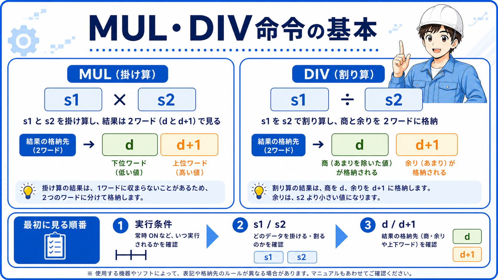
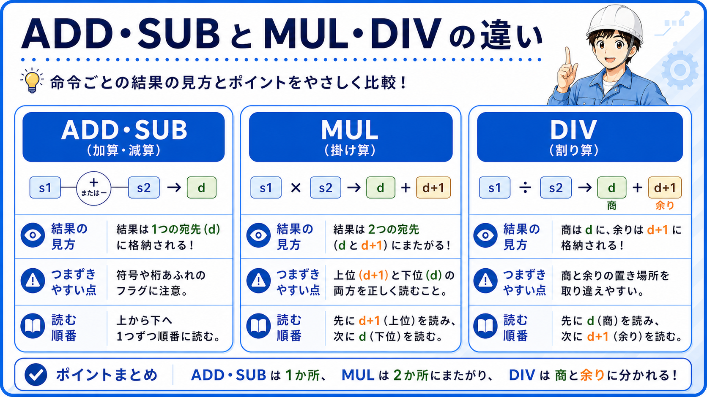
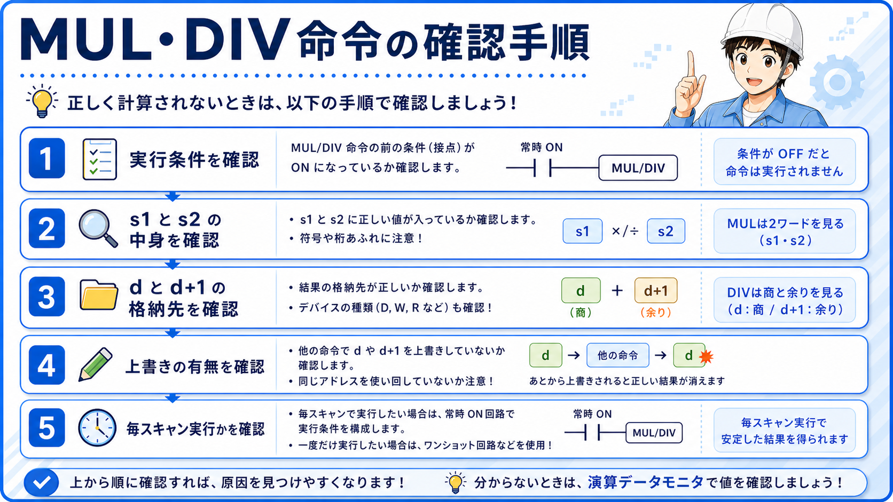

1. GX Works3のMUL・DIV命令とは？
MUL・DIVは、GX Works3で数値の掛け算や割り算を行う基本命令です。ただし初心者が止まりやすいのは、計算式そのものより結果をどこで見るかの部分です。
FX5系の整理では、MULは計算結果を [(d)+1, (d)] で扱い、DIVは 商を(d)、余りを(d+1) で扱います。ここを先に押さえると、ラダーの読み方がかなり安定します。

2. 先に結論：MULは2ワード、DIVは商と余りで見る
MUL・DIVは、ADD・SUBよりも「結果の置き場所」を意識する命令です。特にMULはdだけではなくd+1側まで、DIVは商だけではなく余り側まで見る必要があります。
基本の考え方
まずは「実行条件がONしているか」「s1とs2に何が入っているか」「結果がdやd+1のどこへ出るか」を切り分けて読むと、式を丸暗記しなくても追いやすくなります。
3. MUL命令の基本の読み方
MUL K10 K20 D0 は、10と20を掛けた結果をD0側へ入れるイメージで読みます。ただし結果は1点だけで完結ではなく、[(d)+1, (d)] の並びで見ることが前提です。
現場での読み方
最初は「何と何を掛けるか」より、「結果をどこで見るか」を優先して追うと整理しやすいです。ADD・SUBよりも、結果の幅が一段増える命令として読むのが近道です。

後輩D0だけ見ていれば十分じゃないんですか？

先輩MULは結果が2ワード側まで関係するから、dだけで読み切ると見落としやすいよ。
4. DIV命令の基本の読み方
DIV D10 K3 D20 は、D10を3で割って、商をD20、余りをD21で見るイメージです。ここで余り側を見落とすと、割り切れないケースの判断を誤りやすくなります。
現場での読み方
DIVは「答えが1つ」と思い込みやすいですが、ラダーでは商と余りを分けて扱う命令として読む方が実務では安全です。
5. MUL・DIVはどんな場面で使う？
- 倍率計算や換算処理で内部値を作る
- 個数・長さ・設定値の簡単な演算を行う
- 商と余りを分けて順番や区切りを判断する
既存記事とのつながり
MOVで値を入れ、ADD・SUBで値を増減し、その先でMUL・DIVで数値加工をする流れにすると、GX Works3の命令同士のつながりがかなり見えやすくなります。
6. ADD・SUB命令との違い
ADD・SUBは結果格納先を比較的シンプルに追いやすい命令です。一方でMULは結果の幅、DIVは商と余りの分離が入るため、同じ算術命令でも見るポイントが変わります。

7. 初心者が間違えやすいポイント
dだけ見ている
MULでd+1側を見ずに判断すると、結果の読み違いにつながります。
余りを忘れている
DIVで商だけを見ると、割り切れないケースの整理が崩れます。
計算元を追っていない
s1やs2に入っている値が違えば、結果も当然変わります。
毎スキャン実行を見落とす
条件が続くと、想定以上に演算が繰り返されることがあります。
よくある失敗例
「結果がおかしい」と思ってdだけ確認し、実はd+1側や余り側を見ていなかった、という止まり方はかなり多いです。
9. MUL・DIV命令がうまく動かない時の確認手順
- 実行条件がONしているか
- s1とs2に期待した値が入っているか
- MULならd+1側まで、DIVなら余り側まで見ているか
- dやd+1が別回路で上書きされていないか
- 毎スキャン実行になっていないか

10. まとめ
MUL・DIVは、掛け算や割り算を行うだけでなく、結果をどこで読むかが重要な命令です。MULは結果を2ワードで、DIVは商と余りで読むことを押さえると、GX Works3のラダー理解がかなり安定します。
順番としては、MOVで値の転送、ADD・SUBで値の増減、その次にMUL・DIVで数値加工と追うと、命令同士のつながりが見えやすくなります。

あわせて読みたい記事
今回の内容とつながる基礎・周辺テーマです。